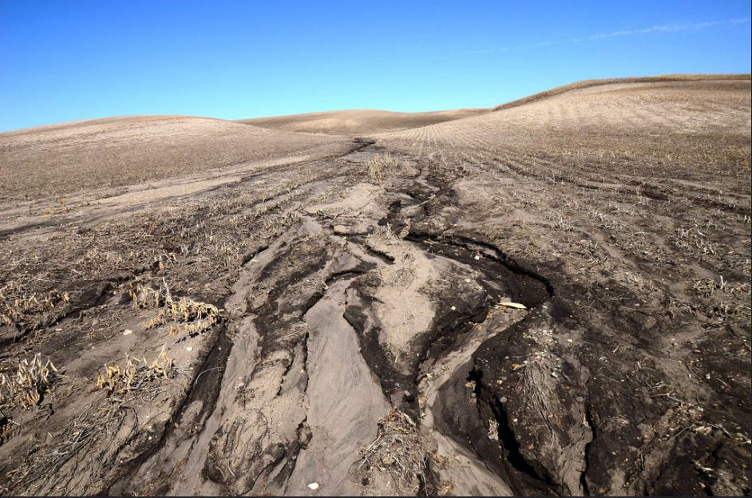

The Beginning of Accelerated Soil Erosion
Recent findings by an international study team show that people have been influencing the earth since well before the Industrial Revolution. Human activities have already greatly exacerbated soil erosion near lake basins on a worldwide basis some 4,000 years ago.
The findings necessitated a multidisciplinary approach, with many sorts of analysis providing a more comprehensive picture of how human activities may be contributing to the accelerating erosion.
The study's primary author, Jean-Philippe Jenny, a French geoscientist associated with the Max Planck Institute for Biogeochemistry and the Alpine Center for Research on Trophic Networks and Liminic Ecosystems, evaluated core sediment samples from 632 lake beds gathered from across the world. Lake sediment cores can be utilized as a natural archive of oscillations in soil erosion throughout time since sediments build at a constant pace in lakes.
Jenny and his colleagues extrapolated changes in lake sedimentation accumulation rates by combining sediment rates with radioactive carbon dating data from each site and discovered that 35% of the tested lakes have accelerated erosion over the previous 10,000 years.
Interestingly, the acceleration in erosion began approximately 4,000 years ago, and the researchers investigated methods to explain this pattern, concluding that people were the most likely culprit. Researchers discovered that changes in erosion were less connected to changes in precipitation and temperature, but increases in deforestation correlated with the rise in erosion. Jenny and his colleagues studied pollen samples from each lake bed location to provide a proxy for adjacent land tree coverage; they discovered that losses in tree cover were strongly associated with increased erosion. "At the time, deforestation was caused by humans since they were only starting to create agriculture," Jenny explained.